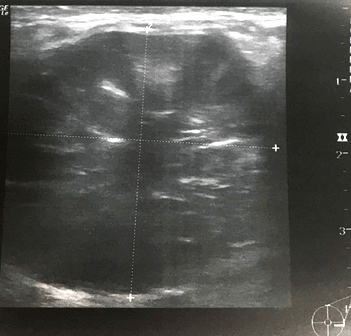

સ્તન

સ્તનના સ્વાસ્થ્યના સૌમ્ય મુદ્દાઓ
ડિંટડી સંબંધિત મુદ્દાઓ
પાયલ (નામ બદલાવેલ), એક 45 વર્ષની સ્ત્રીને તેની ડિંટડીની આજુબાજુથી છ મહિનાથી ડાબી બાજુની ડિંટડીમાંથી વારંવાર થતો ડિંટડીનો પ્રવાહ અને ચેપ જોવા મળેલ છે.
સ્તન
ડિંટડી

નળીનું વિસ્ફરણ એ શું છે?
સ્તન એ નળીઓ (એવી નળીઓ કે જે ડિંટ્ડી સુધી દૂધનું વહન કરે છે) અને લોબ્યુલ્સ (દૂધનું ઉત્પાદન કરતી ગ્રંથીઓ)થી બનેલા હોય છે, જેની આસપાસ ચરબીની અને સહાયક કોષપેશીઓ આવેલી હોય છે. સ્ત્રી જેમ જેમ મેનોપોઝની નજીક પહોંચે છે અને સ્તનની ઉંમર થતી જાય છે તેમ-તેમ એ ડિંટડીની પાછળની નળીઓ ટૂંકી આને પહોળી થતી જાય છે. આને નળીનું વિસ્ફરણ કહે છે
આ સ્તનમાં થતો એક સામાન્ય ફેરફાર છે અને તેના વિશે ચિંતા કરવાની જરૂર નથી. કેટલીક વખત એક પ્રવાહ પહોળી થયેલી નળીઓમાં એકત્ર થઈ શકે છે અને તેની લાઇનિંગ અકળાયેલ થઈ શકે છે. એ લાઇનિંગમાં અલ્સર થવા અને તે દુ:ખાવા યુક્ત થવાની સંભાવના પણ રહેલી હોય છે, જો કે તે સામાન્ય નથી. .
નળીના વિસ્ફરણનું કઈ રીતે નિદાન કરવામાં આવે છે?
એક નિષ્ણાત સાથે પરામર્શ આવશ્યક છે અને ત્રણ અલગ-અલગ પરિક્ષણ કરાવવા આવશ્યક છે, જેને મોટાભાગે ત્રિવિધ મૂલ્યાંકન તરીકે સંદર્ભિત કરાય છે, જેથી એક નિશ્ચિત નિદાન કરી શકાય. આમાં એક દવાખાનામાં પરિક્ષણ, એક મેમોગ્રમ (સ્તનનો એક્સ-રે) અને અલ્ટ્રાસાઉન્ડ (જેમાં હાઇ-ફ્રિક્વેન્સી સાઉન્ડ વેવ્ઝનો ઉપયોગ કરીને સ્તનનું એક ચિત્ર બનાવવામાં આવે છે) કરવામાં આવે છે. .
જો ડિંટડીમાંથી ભારે પ્રવાહ વહેતો હોય, તો તેને પણ કદાચ તપાસી શકાય છે, ખાસ કરીને જો તે લોહીયુક્ત હોયતો, નિદાનની પુષ્ટી કરવા માટે તેનું પરિક્ષણ કરવું જરૂરી છે.
નળીના વિસ્ફરણનું સંચાલન કઈ રીતે કરવામાં આવે છે?
મોટાભાગના કિસ્સાઓમાં, તેમાં કોઈ સારવારની જરૂર હોતી નથી જો તે ઉંમરની સાથેની એક સામાન્ય પ્રક્રિયા હોય અને તે આપમેળે દૂર થઈ જાય છે. જો કોઈ લક્ષણો દેખાતા હોય તો, એક નિષ્ણાતની મુલાકાત લેવી એ મહત્વનું છે. જો કે, ડિંટડીમાંથી જો સમસ્યા પેદા કરતો પ્રવાહ વહેવાનું ચાલુ રહે, તો એક વ્યક્તિએ એ અસર પામેલ નળી અથવા નળીઓને દૂર કરવા માટે ઓપરેશન કરાવવું પડે. એ ઓપરેશન સામાન્ય રીતે એક જનરલ એનેસ્થેટિક હેઠળ કરવામાં આવે છે અને એ દર્દી એ કદાચ એ દિવસ અથવા રાત માટે હોસ્પીટલમાં રોકાવાની જરૂર પડે.
પેરીડક્ટલ માસ્ટિટિસ એ શું છે?
પેરીડક્ટઅલ માસ્ટિટિસ એ એક સ્તનની સૌમ્ય (કેન્સરના હોય તેવી) સ્થિતિ છે. કેટલીક વખત ડિંટડીની નીચે રહેલી નળીઓ સોજો પામે છે અથવા તેને ચેપ લાગી જાય છે. આ પેરીડક્ટલ માસ્ટિટિસ છે. તે બધી ઉંમરની વ્યક્તિઓને અસર કરી શકે છે પરંતુ તે યુવાન સ્ત્રીઓમાં વધુ સામાન્ય છે. જો કે તે સ્ત્રીઓમાં બહુ સામાન્ય છે, પરંતુ પુરુષોને પણ પેરીડક્ટલ માસ્ટિટિસ થઈ શકે છે, પરંતુ તે બહુ ભાગ્યે જ થાય છે.
પેરીડક્ટલ માસ્ટિટિસ હોવાને લીધે સ્તનને સ્પર્શ કરવાથી તે કોમળ અને ગરમ લાગે છે, અને ચામડી કદાચ લાલ થઈ ગયેલી દેખાય છે. તેના પરિણામે ડિંટડીમાંથી પ્રવાહ પણ વહી શકે છે, જે કાંતો શરીરની અંદરથી અથવા શરીરનો ના હોય તેવો પ્રવાહ હોઈ શકે છે.
કેટલીક વખત ડિંટડીની પાછળ એક ગાંઠનો અનુભવ કરી શકાય છે અથવા એ ડિંટડીની પાછળ આવેલ સ્તનની કોષપેશીમાં ઝખમ થઈ શકે છે. તેના લીધે ડિંટડી અંદરની તરફ ખેંચાઇ જાય છે અને તે ઊલટી બની જાય છે. પ્રસંગોપાત એક એબસ્કેસ (એક રસીનો સંગ્રહ) અથવા એક ફિસ્તુલા (એક ટ્રેક્ટ કે જે એ નળી અને ચામડીની વચ્ચે વિકાસ પામે છે) વિકાસ પામી શકે છે. જે લોકો ધુમ્રપાન કરતાં હોય તેઓને પેરીડક્ટલ માસ્ટિટિસ દ્વારા અસર પામવાનું વધુ જોખમ રહેલું છે, કારણ કે સિગરેટના ધૂમાડામાં રહેલાં કણો એ ડિંટડીની પાછળ રહેલ નળીઓને નુકશાન પહોંચાડી શકે છે. ધુમ્રપાનને લીધે સારવાર બાદ સાજાં થવાની પ્રક્રિયા પણ ધીમી પડી શકે છે. .
પેરીડક્ટલ માસ્ટિટિસનું નિદાન કઈ રીતે કરવામાં આવે છે?
એક દવાખાનામાં સ્તનનું પરિક્ષણ અને સ્તનનું અલ્ટ્રાસાઉન્ડ આવશ્યક છે. સ્તન સાવ કોમળ હોવાને લીધે, એક મેમોગ્રામથી બેચેની થઈ શકે છે અને જ્યાં સુધી ચેપનો ઉકેલ ના આવે ત્યાં સુધી તેને હાથ ધરવામાં આવતું નથી. જો ડિંટડીમાંથી પ્રવાહ વહેતો હોય તો, એક લેબોરેટરી પર એક નમૂનો મોકલી શકાય છે જેથી તેને એક માઇક્રોસ્કોપ હેઠળ જોઈને નિદાનની પુષ્ટી કરી શકાય ( જો એ પ્રવાહ રક્ત યુક્ત હોય તો તેવી વધુ સંભાવના રહે છે).
પેરીડક્ટલ માસ્ટિટિસ માટેની સારવાર શું છે?
મોટા ભાગે, એન્ટીબાયોટિકથી ચેપનો ઉકેલ મેળવવામાં મદદ મળે છે. દુ:ખાવામાં રાહત માટે, પેરાસીટામોલનું પ્રિસ્ક્રીપ્શન આપી શકાય છે. જો એક એબસ્કેસ (રસીનો સંગ્રહ) વિકાસ પામે, તો અલ્ટ્રાસાઉન્ડ દ્વારા માર્ગદર્શન પામેલ (એસ્પાઇરેશન) પસને દૂર કરવાની પ્રક્રિયા એ સૌ પ્રથમ પસંદગી છે. તેનું પુનરાવર્તન કરવું જરૂરી બની શકે છે (એક સમય પસાર થઈ ગયા બાદ), જ્યાં સુધી બધા રસી કાઢી નાંખવામાં આવ્યા ના હોય. જો પુનરાવર્તીત એસ્પાઇરેશનને લીધે મદદ ના મળે, તો ચામડીમાં એક નાનું છીદ્ર કરવામાં આવે છે જેનાથી એક નાના જનરલ એનેસ્થેટિક હેઠળ રસીને કાઢી શકાય.
જો પેરીડક્ટલ માસ્ટિટિસ ફરીથી થાય, તો એક વ્યક્તિને કદાચ અસર પામેલ નળી અથવા નળીઓ દૂર કરવા માટે ઓપરેશન કરવાની જરૂર પડે છે. એ અસર પામેલ નળી અથવા નળીઓ (જે એક માઇક્રોડોકેક્ટોમી તરીકે ઓળખાય છે) તેને કાઢી નાંખવા અથવા બધી જ મુખ્ય નળીઓને કાઢી નાંખવા (જેને ટોટલ ડક્ટ એક્સિઝન) તરીકે ઓળખાય છે તે કરવું પડે છે જેથી પેરિડક્ટલ માશ્ટિટિસના પુનરાવર્તન સાથે કામ પાર પાડી શકાય. એ ઓપરેશન એક જનરલ એનેસ્થેટિક હેઠળ કરવામાં આવે છે
